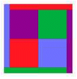
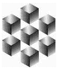

|  | P = N2 + M3 |
 |
This article originally appeared in the January 1971 issue of the Journal of Recreational Mathematics. For additional coverage of this topic, go to Trigg Numbers
In [1], C.W. Trigg discussed those positive integers less than 10,000, which are expressible in the form of N2 + M3, where N and M are also positive integers. Many of the special properties of the integers were listed such as being palindromes or squares, or having more than one representation, for example.
As I glanced over the square entries, I noted some extra relationships not covered by Mr. Trigg. When N = 6 and M = 4, not only does 62 + 43 = 100, but also (6 + 4)2 = 100. Likewise , when N = 10 and M = 5, then 102 + 53 = 225, and (10 + 5)2 = 225. While this pattern of N2 + M3 = (N + M)2 is true for only about one-third of the cases, I set out to discover what patterns, if any, existed in all of them.
To simplify some of the following, let P = A2, where P is one of the squares in Trigg's list. Thus, in the two cases cited above, N + M = A. Of the 34 cases in the list, 12 possess this pattern. Eleven more can be expressed as the sum of N and some multiple of M, that is A = N + tM, where t = 2, 3, and 4. (See Table I for the breakdown of these 23 cases. The remaining eleven cases are not as simple, and will be treated separately.)
There are a number of patterns in Table I:
M(M - t2)
N = --------------- .
2t
Although Mr. Trigg restricted his discussion to positive integers, this need not be so. Other unique patterns emerge when negative integers are introduced. Table II shows the upward extension of the Table I columns so as to include negative integers and zero (the P-column being omitted).
The most obvious fact here is that the N and A columns are "inversely identical", that is, rotate the N-column 180° about the point where all three numbers, N, M, and A, are zero, and the A-column is the result. Next, the number of negative integers in either column is always one less than the t-value for the group. When the absolute values of those negative integers are arranged in a triangular array, the result is
0*
1
3 3
6 8 6
10 15 15 10
15 24 27 24 15
21 35 42 42 35 21
28 48 60 64 60 48 28
36 63 81 90 90 81 63 36
*Here, 0 signifies "no negative integers are present."
It's readily seen that the rows are symmetric, analogous to the rows in Pascal's Triangle. The sequences of integers along the diagonals have their corresponding matches in the N and A columns of Tables I and II. The values directly under the vertex are cubic integers. Finally, when the rows are totaled and denoted St, the sequence of sums is 0, 1, 6, 20, 50, 105, . The terms obey the 4th-degree formula
t2(t2 - 1)
St = ------------ .
12
One final observation before we leave these particular P-squares: The digital roots of all the P-squares, represented by P = N2 + M3 = (N + tM)2, are either 1 or 9. As all squares have digital roots of either 1, 4, 7, or 9, it seems remarkable to me that only two of the four possible values ever occur. Also, whenever t is a multiple of three, the digital roots are always 9; when t is not a multiple of three, the frequency of 1 and 9 occurs in a ratio of 1:2. (The proof of these statements is left to the reader.)
Now we return to the remaining eleven cases referred to earlier. They are represented by the formula A = N + M ± c. (See Table III for the breakdown of these cases.)
Note that c is always an even integer. In the "minus-c" group, there are three cases each for c = 2 and c = 4. While this seems to be the limit for c = 2, I have found at least two more entries for c = 4, though they yield P-squares larger than 10,000 (see Table IV). The "plus-c" group requires a different c-value for each case; and while there is only one entry for each A-formula stated here, three of them (c = 6, 10, and 12) will yield other entries from the t = 2 section of Table I (when M = 6, 10, and 12, respectively). The fact that there are many even integers missing in the c-column (with no readily discernable pattern among the given five) does not imply that solutions do not exist for them. For example, when c = 8, we obtain an entry in Table I -- 576, 8, 8, 24.
The value for c can be extended to other even integers as well. For example, I've found six P-squares for c = 6, again all larger than 10,000 (see Table IV).
Some interesting questions, but whose answers are unknown to this writer, arose while considering these cases. Can c be odd? Does there exist a limit to the value for c? is there a limit to the number of entries a given c may have?
All these observations, based on the curious relationships cited at the beginning of this article, only serve to illustrate that often there are more patterns behind a set of data than first meets the eye. I have, on occasion, taken the liberty of extending the tabular information beyond what was given by Mr. Trigg. This was done, of course, so that late appearing patterns could manifest themselves.
1. Charles W. Trigg, "Integers Equal to N2 + M3", JRM, Vol. 2, No. 1, January 1969, pp. 44-48.
| Comments? Send e-mail. | Back to top | Go back to Home Page | Go back to Contents |